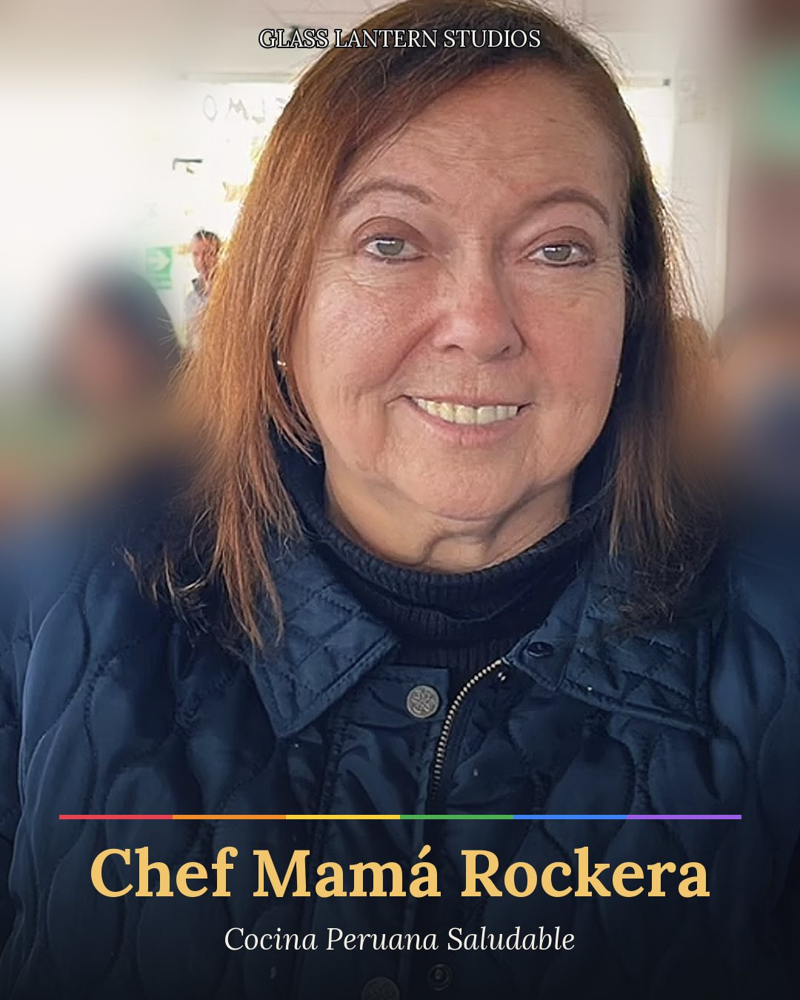

Conoce a Dwayne
Músico, narrador y productor de estudio, con más de cuatro décadas en el roots rock, el blues acústico y el folk celta. Empecé a los nueve años tocando la guitarra junto al violín de mi padre, y tocamos juntos durante veintiséis años por todo Canadá.
No soy terapeuta. Soy alguien que lo ha vivido, y la música es lo que me ha ayudado a salir adelante. Todo lo que hago nace de la vida real, y Glass Lantern Studios está construido sobre esa experiencia vivida, para que nadie tenga que enfrentar lo difícil en soledad.
El estudio
Glass Lantern Studios es una casa de música, palabra hablada e historias, y también un puerto seguro. Álbumes conceptuales y canciones que dan forma honesta a lo pesado y lo no dicho, y compañía para las horas de todos los días.
- The Glass Lantern — la banda, y todo el catálogo musical hasta ahora
- Tales from the Sound Hole — historias reales, contadas con mi propia voz
- The Calavera Hour — breves piezas de palabra hablada sobre blues de fingerstyle, sobre las personas que extrañamos
- The Raven's Wire — palabra hablada convertida en música, con muchos sonidos distintos
- Obsidian Lantern — nuestro sello discográfico, que convierte las historias de personas reales en canciones. Cuéntanos tu historia
La Hora Calavera
Una serie de palabra hablada para el Día de Muertos. Un minuto de mi voz sobre guitarra blues y gaitas celtas, recordando a quienes extrañamos y a quienes solíamos ser.
La primera pieza, para mi papá, llega el 1 de noviembre.
Anchor & Ally
Nuestro acompañante virtual de salud mental para la comunidad LGBTQIA+, con Alex y Dwayne. Apoyo entre pares y música de quienes lo han vivido. No es terapia, es compañía en los días difíciles. La misma linterna.
Cómo funciona. Acompáñanos en vivo en TikTok, únete a las Lighthouse Sessions gratis por la mañana, o pide una sesión privada con Alex o Dwayne. Ven como eres. Habla, escucha, o solo deja que la música te acompañe.
Pide una sesión privada Sigue a Anchor & Ally en InstagramCoach Alex
Alex Gamboa es mi cofundadora y socia a partes iguales, entrenadora de fuerza y acondicionamiento, y defensora de la salud mental.
La atleta
- Lanzadora de bala profesional con el Instituto Peruano del Deporte, de 2005 a 2016
- Campeona Panamericana y múltiple medallista sudamericana
- Top 10 mundial en 2010
- Récord nacional del Perú en lanzamiento de bala femenino en todas las categorías, de escolar a adulto
- La primera mujer en la historia del Perú en superar los 15 y luego los 16 metros
La entrenadora
Formada por ISSA y NASM en fuerza y acondicionamiento, terapia del ejercicio, nutrición holística y bienestar, coaching de salud, yoga y coaching en línea.
Rise & Thrive: coaching en línea 1 a 1
Levántate de las cenizas, da el paso hacia tu verdadero potencial y florece con un entrenamiento que trabaja a tu favor, no en tu contra. Pensado para la comunidad LGBTQIA+ y abierto a cualquier persona lista para transformar su cuerpo, su mentalidad y su salud.
- 100% personalizado a tu estilo de vida, tus necesidades y tus metas
- Sin dietas de moda, planes genéricos, batidos ni fajas
- Coaching de nutrición para el rendimiento, para sanar tu relación con la comida
- Hecho para resultados que duran toda la vida
Para quién es: tienes más de 21 años, estás listo o lista para darlo todo en tu entrenamiento y quieres resultados duraderos y sostenibles.
Cuerpo fuerte, mente serena.
Postula al coachingSigue su entrenamiento: @coach_alexgamboa en Instagram y TikTok
¿Tienes preguntas? Envía PRIDE a @_mylifebeingalex_ en TikTok o Instagram, o búscala en Instagram como @alexgamboa.
Visita la página de AlexCocina Peruana Saludable con Chef Mamá Rockera

Consuelo, tradición y resiliencia
Te presentamos a Betty, la mamá de Alex, conocida en nuestra cocina como Chef Mamá Rockera. Para Betty, cocinar nunca ha sido solo comida. Creció en Lima, Perú, y aprendió desde muy joven que una cocina puede ser un lugar de calidez y unión. Ha pasado por temporadas difíciles con su familia, y sabe cómo una mesa compartida y una comida casera pueden ayudar a mantener unida a la gente.
Ahora trae ese corazón a Glass Lantern Studios: cocina peruana auténtica y saludable, hecha con alma, cada paso explicado para que la prepares en casa. Las mejores recetas, dice ella, se sazonan con toda una vida de historias.
Cada receta viene de tres formas:
- Un video de cocina para seguir en casa
- La receta escrita, paso a paso
- El porqué de cada ingrediente y cada proceso
Muy pronto: el libro de recetas de Chef Mamá Rockera. Sus recetas en un solo libro, cada una con su video.
Cocinado con amor, a la peruana.
Sigue a Betty en TikTokLas Lighthouse Sessions
Una hora diaria de música e historias, pensada para quienes necesitan una chispa para empezar el día, no una reunión. La música sigue sonando. Sin agenda, sin actuaciones. Deja la máscara en la puerta, quédate el tiempo que quieras, y di algo o no digas nada.
Es gratis. Envíanos un mensaje y te agregamos a la invitación. Recibirás el enlace de la sala por correo, y tu dirección queda privada para los demás invitados.
Pide tu invitaciónSi estás en peligro ahora mismo, comunícate con una línea de crisis. Son gratuitas y atienden las 24 horas.
Canadá y EE. UU.: llama o escribe al 988. Perú: llama al 113, opción 5. En otros países: findahelpline.com.
Glass Lantern es apoyo entre pares, no atención de emergencia.
Encuéntrame
Acompáñanos en vivo en TikTok todos los días.
Sigue a Dwayne en TikTok Sigue a Alex en TikTokEstoy en la playa, un espacio común y abierto para personas que construyen cosas juntas.
Mi página en la playa Visita la página de Alex